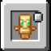

使用
需要先装饰品模组：Fabric 用 Trinkets（并装 Fabric API），NeoForge 用 Curios 或 Trinkets。
- 打开饰品界面（Trinkets / Curios 的快捷键）
- 把不死图腾放进 护符（Charm） 槽
- 死亡时自动消耗图腾并复活
兼容性
- 按
c:totems标签识别图腾：任何打了这个标签的物品都能当图腾用
给模组作者
想让自己的物品也能触发，或者把其它饰品系统接进来，见仓库里的接入文档：
MOD · 简体

为不死图腾新增一个饰品槽位。
需要先装饰品模组：Fabric 用 Trinkets（并装 Fabric API），NeoForge 用 Curios 或 Trinkets。
c:totems 标签识别图腾：任何打了这个标签的物品都能当图腾用想让自己的物品也能触发，或者把其它饰品系统接进来，见仓库里的接入文档：